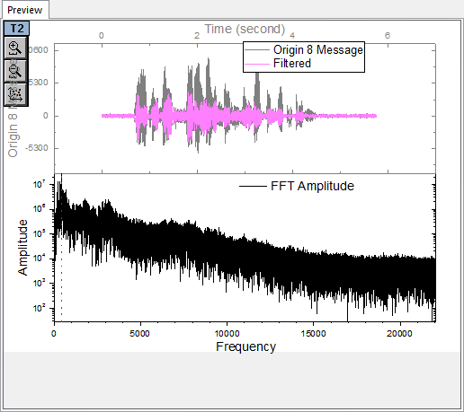
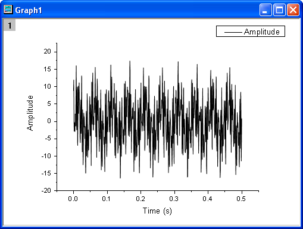
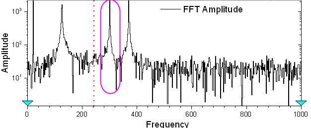

FFTフィルタ
FFT-Filter
概要
OriginはFFTフィルタ、 つまりフーリエ変換を使って入力信号の周波数成分を分析するフィルタリングを備えています。
FFTフィルタでは、ローパス、ハイパス、バンドパス、バンドブロック、しきい値、ローパスパラボリックの6種類のフィルターを利用できます。ローパスフィルターは、カットオフ周波数より大きいすべての周波数成分をブロックし、小さい周波数のみを通します。ハイパスフィルターはローパスフィルターの逆で、カットオフ周波数より小さいすべての周波数成分を除去します。
このチュートリアルはFFTフィルタでのローパス、バンドパスフィルタの使い方を学習します。
学習する項目
このチュートリアルでは、以下の項目について解説します。
ローパスフィルター
- 新しいワークブックを用意します。ヘルプ: フォルダを開く: サンプルフォルダを選択して、サンプルフォルダを開きます。このフォルダ内のSignal ProcessingサブフォルダにあるOrigin 8 Message.wav ファイルを探します。空のワークシートにファイルをドラッグアンドドロップしてインポートします。
- 列A(Y)を選択して、2Dグラフツールバーの
 ボタンをクリックし、折れ線グラフを作図します。
ボタンをクリックし、折れ線グラフを作図します。
- この信号は、音波であり、すでに高い周波数成分をノイズとみなすことができ、ブロックされるべきであることがわかっています。そのため、さらなる分析のために、低周波数成分を取得するため、FFTフィルタのローパスを使用します。
- グラフがアクティブなことを確認して、解析：信号処理：FFTフィルタを選択してダイアログを開きます。
- フィルタの種類がローパスに設定されていることを確認します。
- 自動プレビューのチェックボックスにチェックを付け、プレビューパネルを有効にします。
- 
- 上の2つのグラフは時間領域における信号を表示し、下の画像では、高速フーリエ変換後の周波数領域の信号を示しています。赤い縦の点線は、カットオフ周波数を意味しています。この縦線を移動して、元の信号と、このパネルの上部にリアルタイムでフィルタリングされた信号間の比較をプレビューすることができます。
- 振幅のピーク（下図のような）のX位置に縦線を移動します。この操作では、人的誤差があるかもしれません。しかし、ここでは、大まかに信号をフィルタリングするので許容します。

- OKをクリックして、信号データにFFTフィルタを適用します。
- グラフにフィルタ後のデータか追加されます。メニューのグラフ操作：スピードモードを選択してこのグラフのスピードモードを解除します。最終的なグラフは下図のようになります。

- 結果グラフから、ローパスフィルタにより高周波数データがブロックされたことがわかります。
バンドパスフィルター
- 新規ワークブックを開きます。ヘルプ: フォルダを開く: サンプルフォルダを選択して、サンプルフォルダを開きます。このフォルダ内のSignal Processingサブフォルダにあるfftfilter3.dat ファイルを探します。空のワークシートにファイルをドラッグアンドドロップしてインポートします。
- 列Bを選択して、2Dグラフツールバーのボタンをクリックし、折れ線グラフを作図します。
- 
- グラフが表示されたら、解析：信号処理：FFTフィルタを選択します。すると、fft_filtersダイアログボックスが開きます。
- 自動プレビューのチェックボックスにチェックを付け、プレビューパネルを有効にします。
- 周波数領域のプロット（下）から、この信号は、複数の異なる周波数での成分を持っていることがわかります。ここでは、約300Hzので成分を取得します。そのためにバンドパスの手法を使用します。
- 
- フィルタの種類をバンドパスに変更します。
- バンドパスが選択されると、2つの垂直な赤い線がプレビューグラフ内に配置され、上部/下部のカットオフ周波数を参照します。これら2つの線を移動し、このパネルの上部にあるフィルタリング結果のリアルタイムプレビューを取得できます。
- ここでは、カットオフ周波数は以下のように設定します。
- 目的の振幅のピークがカットオフ周波数範囲内に留まるようにさえすれば、上下のカットオフ周波数の値は若干異なるケースであっても、フィルタリングの誤差を許容できると考えることができます。
- OK ボタンをクリックしてフィルタリングを実行します。
- フィルタリングによって300Hz周辺の周波数を取り出すことができました。